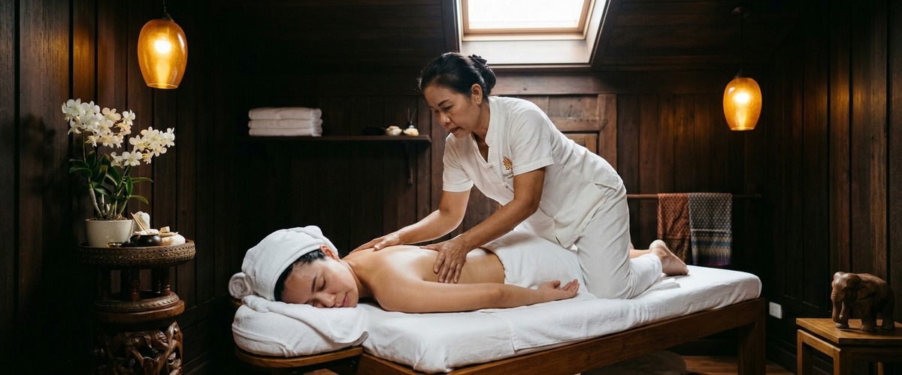
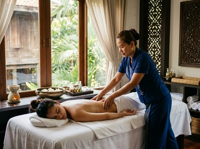
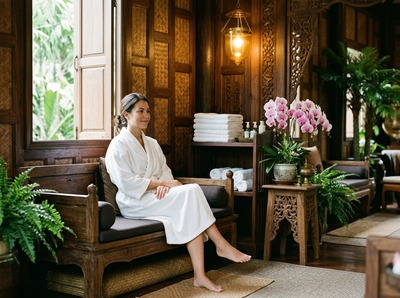

If your scalp feels tight, your hair looks dull, or stress has taken its toll from root to tip, a professional hair oiling treatment in Glasgow can make a genuine difference.

At Serendipity Massage Therapy & Wellness on Hope Street, we use warm botanical oils and focused massage technique to restore moisture, ease scalp tension, and leave your hair soft, shiny, and revitalised.
Hair oiling is a therapeutic treatment rooted in Ayurvedic tradition. Warm, nutrient-rich oils are applied to the scalp and worked through the hair using deliberate massage movements. The warmth helps the oil reach the hair follicle and shaft more deeply.
The massage itself boosts circulation at the scalp. At Serendipity, our therapists use effleurage and petrissage along the scalp, neck, and upper shoulders. That makes this a treatment that works on both your hair and your body at the same time.

The oils are botanical and chosen to nourish the hair, not just coat it. Each session is a hands-on treatment delivered by a trained therapist. It is not a DIY routine done at a salon sink.
This treatment suits anyone whose scalp has been under-cared-for. That includes people who hold tension in their neck and head from long hours at a desk, and those dealing with a dry or irritated scalp.
Anyone whose hair has lost condition through heat styling, colour treatments, or seasonal dryness will benefit too. It is also a great reset for people who want something restorative rather than purely functional. You can book your hair oiling session online and come in with no preparation needed.
A session typically runs 30 to 45 minutes. It begins with your therapist choosing the right botanical oil blend for your scalp and hair type. The warm oil is applied at the roots and massaged through using circular fingertip movements and kneading along the scalp.
Your therapist will also work on the neck and upper shoulders. That is where much of the tension affecting the scalp starts.

After the session, your hair will feel noticeably softer and your scalp genuinely relaxed. We recommend leaving the oil in for a short time before washing at home, so it has time to fully absorb.
Many clients at Serendipity pair this with our aromatherapy massage or Swedish massage for a complete head-to-shoulder session. You can explore the full range on our website and book the combination that suits you.
At Serendipity Massage Therapy & Wellness, every treatment is delivered by a trained therapist. Our techniques were developed under the guidance of head therapist Jariya Malone. Our approach is consistent, personal, and based on what your body actually needs — not a standard script applied to every client.
There is no need to wash your hair beforehand. Come as you are. Your therapist will work with your scalp as it is, applying the warm oil and massage technique directly. We recommend holding off on washing your hair for a few hours after the session, so the oils have time to fully absorb before shampooing.
A standard session at Serendipity runs between 30 and 45 minutes. This includes time for your therapist to assess your scalp and hair before beginning, and extends to the neck and upper shoulder area as part of the full treatment. If you would like to combine it with another service, just let us know when booking.
Most clients leave feeling noticeably relaxed, with a softer scalp and a genuine sense of calm. The massage component boosts circulation and can ease the kind of head tension that builds up slowly over a working week. Your hair will feel softer and look shinier, even before washing. Some clients feel a light sleepiness afterwards. This is entirely normal after deep scalp work.
For general scalp health and upkeep, once or twice a month works well. If you have a particularly dry scalp, real hair damage, or high stress levels, more frequent sessions in the short term can help restore condition faster. Your therapist can advise after your first session based on what they observe.
Yes. The botanical oils are chosen with sensitivity in mind. Your therapist will adjust the blend and pressure to suit your scalp's condition. If you have a specific scalp condition, allergy, or concern, please mention it when you book or at the start of your session. We can adapt accordingly. You can also call us on 0141 673 6630 if you have questions before arriving.
A hair oiling treatment in Glasgow focuses on the scalp and hair. It uses warm botanical oils and targeted massage to nourish the roots and ease scalp tension. Our aromatherapy massage is a full-body treatment. It uses therapeutic-grade essential oils and flowing technique to address wider muscle tension and nervous system relaxation. The two work well together and can be combined in the same visit.